In this lab, you will play with unsupervised classification techniques while working with ecological community datasets.
Ordination orders sites near each other based on similarity. It is a multivariate analysis technique used to effectively collapse dependent axes into fewer dimensions, i.e. dimensionality reduction.
Principal Components Analyses (PCA) is the most common and oldest technique that assumes linear relationships between axes. You will follow a non-ecological example from Chapter 17 Principal Components Analysis | Hands-On Machine Learning with R to learn about this commonly used technique.
Non-metric MultiDimensional Scaling (NMDS) allows for non-linear relationships. This ordination technique is implemented in the R package vegan. You’ll use an ecological dataset, species and environment from lichen pastures that reindeer forage upon, with excerpts from the vegantutor vignette (source) to apply these techniques:
Ordination
Although this example uses a non-ecological dataset, it goes through the materials walk through the idea and procedure of conducting an ordination using the most widespread technique.
Please read the entirety of Chapter 17 Principal Components Analysis | Hands-On Machine Learning with R. Supporting text is mentioned below where code is run.
See supporting text: 17.1 Prerequisites
# load R packages
librarian::shelf(
dplyr, ggplot2, h2o)##
## The 'cran_repo' argument in shelf() was not set, so it will use
## cran_repo = 'https://cran.r-project.org' by default.
##
## To avoid this message, set the 'cran_repo' argument to a CRAN
## mirror URL (see https://cran.r-project.org/mirrors.html) or set
## 'quiet = TRUE'.# set seed for reproducible results
set.seed(42)
# get data
url <- "https://koalaverse.github.io/homlr/data/my_basket.csv"
my_basket <- readr::read_csv(url)
dim(my_basket)## [1] 2000 42my_basket## # A tibble: 2,000 × 42
## `7up` lasagna pepsi yop red.wine cheese bbq bulmers mayonnaise horlics
## <dbl> <dbl> <dbl> <dbl> <dbl> <dbl> <dbl> <dbl> <dbl> <dbl>
## 1 0 0 0 0 0 0 0 0 0 0
## 2 0 0 0 0 0 0 0 0 0 0
## 3 0 0 0 0 0 0 0 0 0 0
## 4 0 0 0 2 1 0 0 0 0 0
## 5 0 0 0 0 0 0 0 2 0 0
## 6 0 0 0 0 0 0 0 0 0 0
## 7 1 1 0 0 0 0 1 0 0 0
## 8 0 0 0 0 0 0 0 0 0 0
## 9 0 1 0 0 0 0 0 0 0 0
## 10 0 0 0 0 0 0 0 0 0 2
## # … with 1,990 more rows, and 32 more variables: chicken.tikka <dbl>,
## # milk <dbl>, mars <dbl>, coke <dbl>, lottery <dbl>, bread <dbl>,
## # pizza <dbl>, sunny.delight <dbl>, ham <dbl>, lettuce <dbl>,
## # kronenbourg <dbl>, leeks <dbl>, fanta <dbl>, tea <dbl>, whiskey <dbl>,
## # peas <dbl>, newspaper <dbl>, muesli <dbl>, white.wine <dbl>, carrots <dbl>,
## # spinach <dbl>, pate <dbl>, instant.coffee <dbl>, twix <dbl>,
## # potatoes <dbl>, fosters <dbl>, soup <dbl>, toad.in.hole <dbl>, …From Section 1.4:
my_basket.csv: Grocery items and quantities purchased. Each observation represents a single basket of goods that were purchased together.
See supporting text: 17.4 Performing PCA in R
h2o.no_progress() # turn off progress bars for brevity
h2o.init(max_mem_size = "5g") # connect to H2O instance## Connection successful!
##
## R is connected to the H2O cluster:
## H2O cluster uptime: 2 days 3 hours
## H2O cluster timezone: America/Los_Angeles
## H2O data parsing timezone: UTC
## H2O cluster version: 3.36.0.1
## H2O cluster version age: 27 days
## H2O cluster name: H2O_started_from_R_bbest_zyq682
## H2O cluster total nodes: 1
## H2O cluster total memory: 5.00 GB
## H2O cluster total cores: 12
## H2O cluster allowed cores: 12
## H2O cluster healthy: TRUE
## H2O Connection ip: localhost
## H2O Connection port: 54321
## H2O Connection proxy: NA
## H2O Internal Security: FALSE
## H2O API Extensions: Amazon S3, XGBoost, Algos, Infogram, AutoML, Core V3, TargetEncoder, Core V4
## R Version: R version 4.1.1 (2021-08-10)# convert data to h2o object
my_basket.h2o <- as.h2o(my_basket)
# run PCA
my_pca <- h2o.prcomp(
training_frame = my_basket.h2o,
pca_method = "GramSVD",
k = ncol(my_basket.h2o),
transform = "STANDARDIZE",
impute_missing = TRUE,
max_runtime_secs = 1000)
my_pca## Model Details:
## ==============
##
## H2ODimReductionModel: pca
## Model ID: PCA_model_R_1643030340066_10
## Importance of components:
## pc1 pc2 pc3 pc4 pc5 pc6
## Standard deviation 1.513919 1.473768 1.459114 1.440635 1.435279 1.411544
## Proportion of Variance 0.054570 0.051714 0.050691 0.049415 0.049048 0.047439
## Cumulative Proportion 0.054570 0.106284 0.156975 0.206390 0.255438 0.302878
## pc7 pc8 pc9 pc10 pc11 pc12
## Standard deviation 1.253307 1.026387 1.010238 1.007253 0.988724 0.985320
## Proportion of Variance 0.037400 0.025083 0.024300 0.024156 0.023276 0.023116
## Cumulative Proportion 0.340277 0.365360 0.389659 0.413816 0.437091 0.460207
## pc13 pc14 pc15 pc16 pc17 pc18
## Standard deviation 0.970453 0.964303 0.951610 0.947978 0.944826 0.932943
## Proportion of Variance 0.022423 0.022140 0.021561 0.021397 0.021255 0.020723
## Cumulative Proportion 0.482630 0.504770 0.526331 0.547728 0.568982 0.589706
## pc19 pc20 pc21 pc22 pc23 pc24
## Standard deviation 0.931745 0.924207 0.917106 0.908494 0.903247 0.898109
## Proportion of Variance 0.020670 0.020337 0.020026 0.019651 0.019425 0.019205
## Cumulative Proportion 0.610376 0.630713 0.650739 0.670390 0.689815 0.709020
## pc25 pc26 pc27 pc28 pc29 pc30
## Standard deviation 0.894277 0.876167 0.871809 0.865912 0.855036 0.845130
## Proportion of Variance 0.019041 0.018278 0.018096 0.017852 0.017407 0.017006
## Cumulative Proportion 0.728061 0.746339 0.764436 0.782288 0.799695 0.816701
## pc31 pc32 pc33 pc34 pc35 pc36
## Standard deviation 0.842818 0.837655 0.826422 0.818532 0.813796 0.804380
## Proportion of Variance 0.016913 0.016706 0.016261 0.015952 0.015768 0.015405
## Cumulative Proportion 0.833614 0.850320 0.866581 0.882534 0.898302 0.913707
## pc37 pc38 pc39 pc40 pc41 pc42
## Standard deviation 0.796073 0.793781 0.780615 0.778612 0.763433 0.749696
## Proportion of Variance 0.015089 0.015002 0.014509 0.014434 0.013877 0.013382
## Cumulative Proportion 0.928796 0.943798 0.958307 0.972741 0.986618 1.000000
##
##
## H2ODimReductionMetrics: pca
##
## No model metrics available for PCAmy_pca@model$eigenvectors %>%
as.data.frame() %>%
mutate(feature = row.names(.)) %>%
ggplot(aes(pc1, reorder(feature, pc1))) +
geom_point()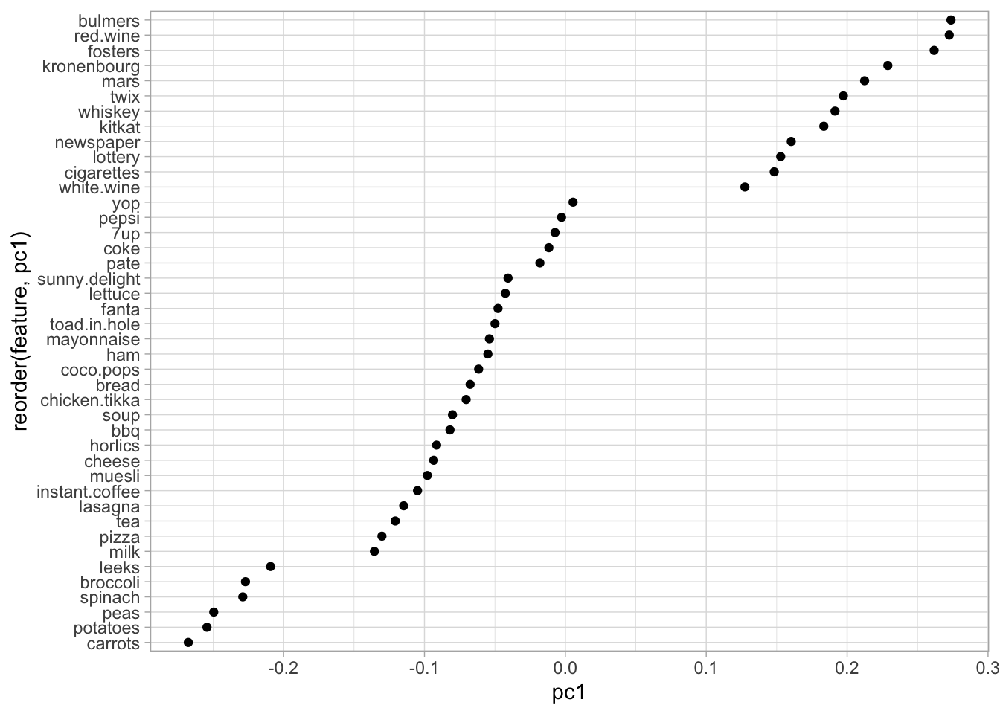
my_pca@model$eigenvectors %>%
as.data.frame() %>%
mutate(feature = row.names(.)) %>%
ggplot(aes(pc1, pc2, label = feature)) +
geom_text()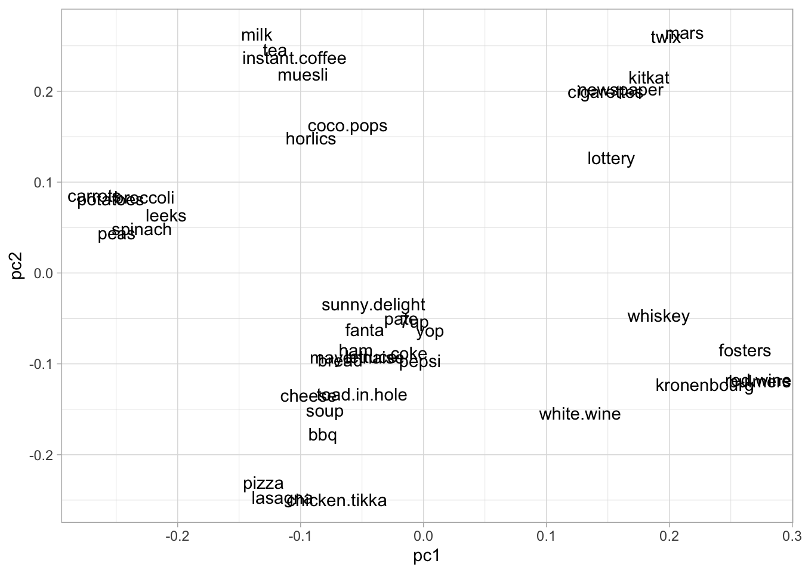
See supporting text: 17.5.1 Eigenvalue criterion.
# Compute eigenvalues
eigen <- my_pca@model$importance["Standard deviation", ] %>%
as.vector() %>%
.^2
# Sum of all eigenvalues equals number of variables
sum(eigen)## [1] 42## [1] 42
# Find PCs where the sum of eigenvalues is greater than or equal to 1
which(eigen >= 1)## [1] 1 2 3 4 5 6 7 8 9 10# Extract PVE and CVE
ve <- data.frame(
PC = my_pca@model$importance %>% seq_along(),
PVE = my_pca@model$importance %>% .[2,] %>% unlist(),
CVE = my_pca@model$importance %>% .[3,] %>% unlist())
# Plot PVE and CVE
ve %>%
tidyr::gather(metric, variance_explained, -PC) %>%
ggplot(aes(PC, variance_explained)) +
geom_point() +
facet_wrap(~ metric, ncol = 1, scales = "free")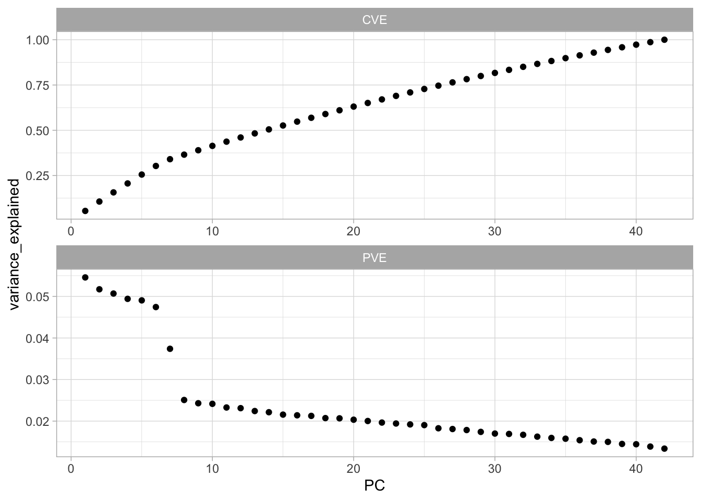
# How many PCs required to explain at least 75% of total variability
min(which(ve$CVE >= 0.75))## [1] 27# Screee plot criterion
data.frame(
PC = my_pca@model$importance %>% seq_along,
PVE = my_pca@model$importance %>% .[2,] %>% unlist()) %>%
ggplot(aes(PC, PVE, group = 1, label = PC)) +
geom_point() +
geom_line() +
geom_text(nudge_y = -.002)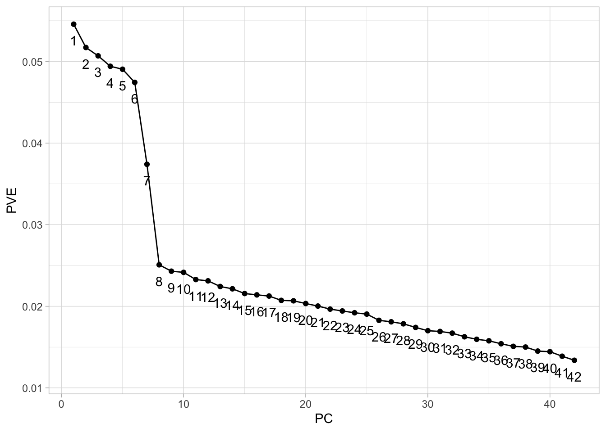
See supporting text: 2.1 Non-metric Multidimensional scaling in vegantutor.pdf:
# load R packages
librarian::shelf(
vegan, vegan3d)##
## The 'cran_repo' argument in shelf() was not set, so it will use
## cran_repo = 'https://cran.r-project.org' by default.
##
## To avoid this message, set the 'cran_repo' argument to a CRAN
## mirror URL (see https://cran.r-project.org/mirrors.html) or set
## 'quiet = TRUE'.# vegetation and environment in lichen pastures from Vare et al (1995)
data("varespec") # species
data("varechem") # chemistry
varespec %>% tibble()## # A tibble: 24 × 44
## Callvulg Empenigr Rhodtome Vaccmyrt Vaccviti Pinusylv Descflex Betupube
## <dbl> <dbl> <dbl> <dbl> <dbl> <dbl> <dbl> <dbl>
## 1 0.55 11.1 0 0 17.8 0.07 0 0
## 2 0.67 0.17 0 0.35 12.1 0.12 0 0
## 3 0.1 1.55 0 0 13.5 0.25 0 0
## 4 0 15.1 2.42 5.92 16.0 0 3.7 0
## 5 0 12.7 0 0 23.7 0.03 0 0
## 6 0 8.92 0 2.42 10.3 0.12 0.02 0
## 7 4.73 5.12 1.55 6.05 12.4 0.1 0.78 0.02
## 8 4.47 7.33 0 2.15 4.33 0.1 0 0
## 9 0 1.63 0.35 18.3 7.13 0.05 0.4 0
## 10 24.1 1.9 0.07 0.22 5.3 0.12 0 0
## # … with 14 more rows, and 36 more variables: Vacculig <dbl>, Diphcomp <dbl>,
## # Dicrsp <dbl>, Dicrfusc <dbl>, Dicrpoly <dbl>, Hylosple <dbl>,
## # Pleuschr <dbl>, Polypili <dbl>, Polyjuni <dbl>, Polycomm <dbl>,
## # Pohlnuta <dbl>, Ptilcili <dbl>, Barbhatc <dbl>, Cladarbu <dbl>,
## # Cladrang <dbl>, Cladstel <dbl>, Cladunci <dbl>, Cladcocc <dbl>,
## # Cladcorn <dbl>, Cladgrac <dbl>, Cladfimb <dbl>, Cladcris <dbl>,
## # Cladchlo <dbl>, Cladbotr <dbl>, Cladamau <dbl>, Cladsp <dbl>, …vare.dis <- vegdist(varespec)
vare.mds0 <- monoMDS(vare.dis)
stressplot(vare.mds0)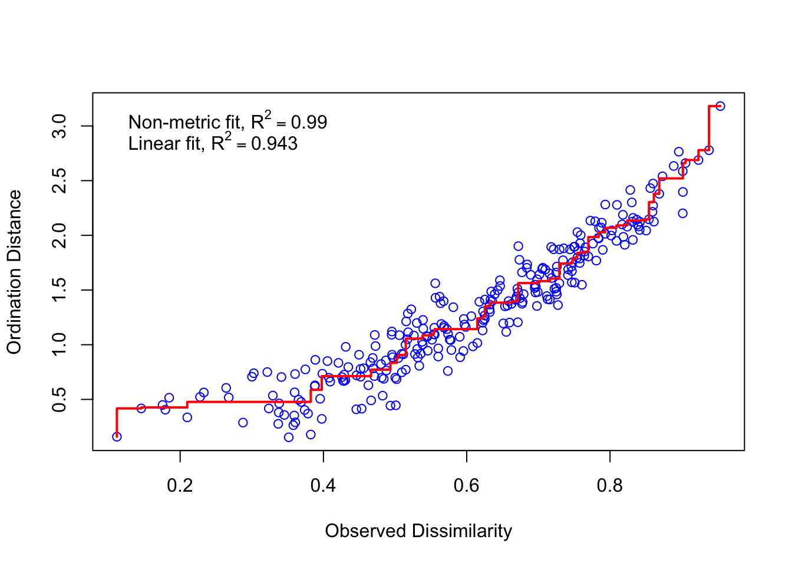
ordiplot(vare.mds0, type = "t")## species scores not available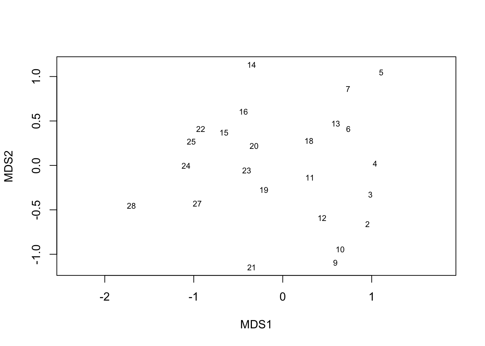
vare.mds <- metaMDS(varespec, trace = FALSE)
vare.mds##
## Call:
## metaMDS(comm = varespec, trace = FALSE)
##
## global Multidimensional Scaling using monoMDS
##
## Data: wisconsin(sqrt(varespec))
## Distance: bray
##
## Dimensions: 2
## Stress: 0.1825658
## Stress type 1, weak ties
## No convergent solutions - best solution after 20 tries
## Scaling: centring, PC rotation, halfchange scaling
## Species: expanded scores based on 'wisconsin(sqrt(varespec))'plot(vare.mds, type = "t")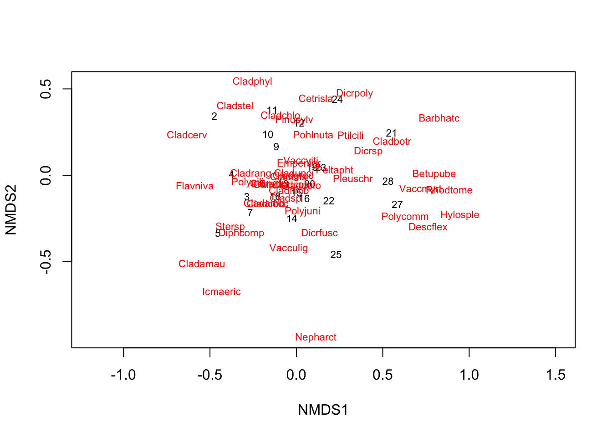
See supporting text in vegantutor.pdf: * 3 Environmental interpretation * 3.1 Vector fitting * 3.2 Surface fitting
ef <- envfit(vare.mds, varechem, permu = 999)
ef##
## ***VECTORS
##
## NMDS1 NMDS2 r2 Pr(>r)
## N -0.05738 -0.99835 0.2536 0.046 *
## P 0.61977 0.78478 0.1939 0.109
## K 0.76653 0.64220 0.1809 0.121
## Ca 0.68527 0.72829 0.4119 0.004 **
## Mg 0.63258 0.77449 0.4270 0.004 **
## S 0.19145 0.98150 0.1752 0.135
## Al -0.87156 0.49029 0.5269 0.001 ***
## Fe -0.93594 0.35215 0.4450 0.001 ***
## Mn 0.79873 -0.60169 0.5231 0.002 **
## Zn 0.61757 0.78652 0.1879 0.123
## Mo -0.90314 0.42935 0.0610 0.494
## Baresoil 0.92479 -0.38047 0.2508 0.045 *
## Humdepth 0.93279 -0.36042 0.5201 0.001 ***
## pH -0.64795 0.76168 0.2308 0.058 .
## ---
## Signif. codes: 0 '***' 0.001 '**' 0.01 '*' 0.05 '.' 0.1 ' ' 1
## Permutation: free
## Number of permutations: 999plot(vare.mds, display = "sites")
plot(ef, p.max = 0.05)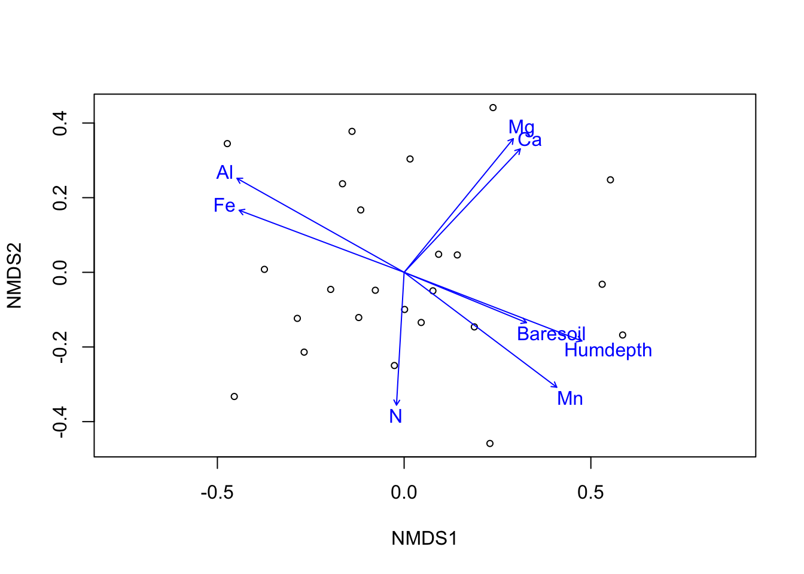
ef <- envfit(vare.mds ~ Al + Ca, data = varechem)
plot(vare.mds, display = "sites")
plot(ef)
tmp <- with(varechem, ordisurf(vare.mds, Al, add = TRUE))
ordisurf(vare.mds ~ Ca, data=varechem, add = TRUE, col = "green4")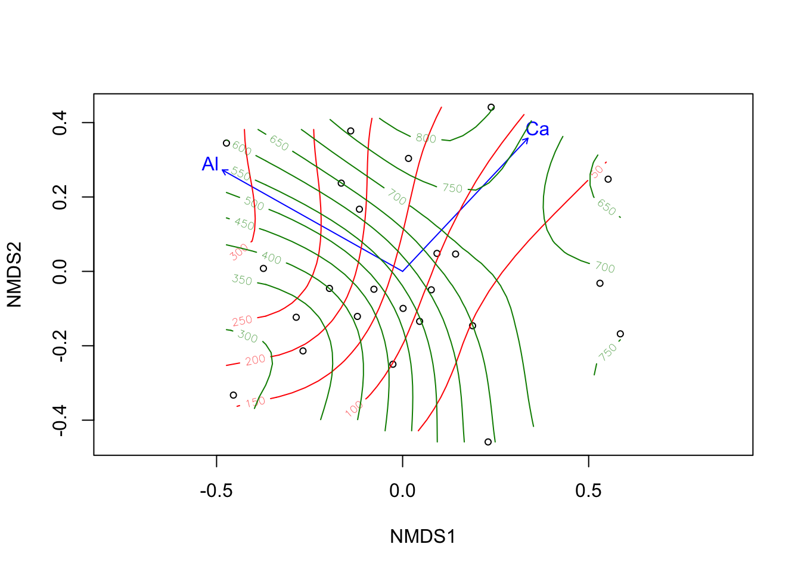
##
## Family: gaussian
## Link function: identity
##
## Formula:
## y ~ s(x1, x2, k = 10, bs = "tp", fx = FALSE)
##
## Estimated degrees of freedom:
## 4.72 total = 5.72
##
## REML score: 156.656See supporting text in vegantutor.pdf: * 4 Constrained ordination * 4.1 Model specification
Technically, this uses another technique cca, or canonical correspondence analysis.
# ordinate on species constrained by three soil elements
vare.cca <- cca(varespec ~ Al + P + K, varechem)
vare.cca## Call: cca(formula = varespec ~ Al + P + K, data = varechem)
##
## Inertia Proportion Rank
## Total 2.0832 1.0000
## Constrained 0.6441 0.3092 3
## Unconstrained 1.4391 0.6908 20
## Inertia is scaled Chi-square
##
## Eigenvalues for constrained axes:
## CCA1 CCA2 CCA3
## 0.3616 0.1700 0.1126
##
## Eigenvalues for unconstrained axes:
## CA1 CA2 CA3 CA4 CA5 CA6 CA7 CA8
## 0.3500 0.2201 0.1851 0.1551 0.1351 0.1003 0.0773 0.0537
## (Showing 8 of 20 unconstrained eigenvalues)# plot ordination
plot(vare.cca)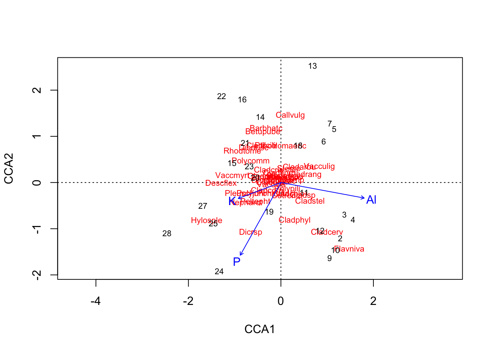
# plot 3 dimensions
ordiplot3d(vare.cca, type = "h")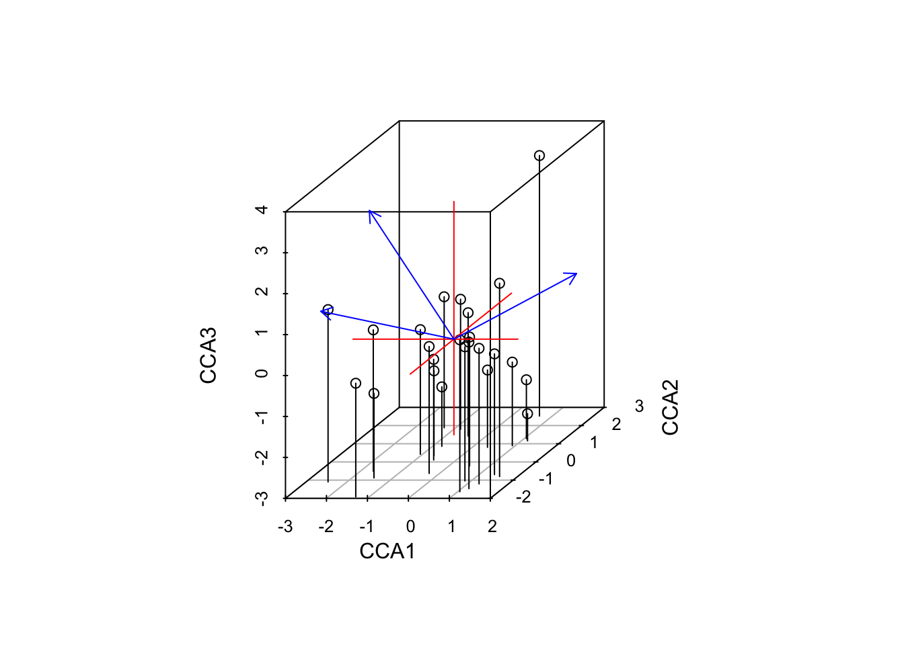
if (interactive()){
ordirgl(vare.cca)
}